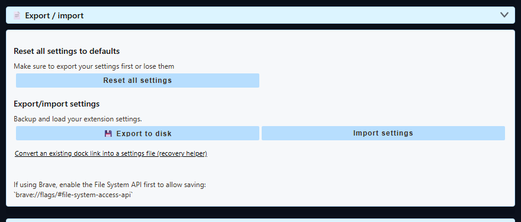

Правило безопасности
- Сначала экспортируйте настройки. Храните экспортированный файл вне папки приложения или распакованного расширения.
- Не удаляйте расширение браузера только ради обновления. Удаление расширения удаляет сохранённые настройки этой установки.
- Оставляйте одну рабочую копию. Не перезаписывайте единственную резервную копию при исправлении повреждённой конфигурации.
- После обновления перезагрузите страницы источников. Снова откройте созданные ссылки док-панели и оверлеев и обновите сохранённые источники браузера OBS, если URL изменились.
Резервное копирование расширения браузера (Chrome, Edge, Firefox)
- Откройте панель управления Social Stream Ninja и прокрутите до Global settings and tools («Общие настройки и инструменты»).
- Открыть Export / import («Экспорт / импорт»).
- Выберите Export to disk («Экспорт на диск»), выберите надёжное место и сохраните
.dataрасширение имени файла. - Убедитесь, что сохранённый
.dataфайл существует перед обновлением, удалением или сбросом чего-либо. - Используйте Импорт настроек для последующего восстановления этого файла.

Chrome Web Store и другие расширения из магазинов: обновления обычно устанавливаются поверх и сохраняют настройки. Не удаляйте и не устанавливайте расширение заново только ради принудительного обновления.
Ручное обновление распакованной версии: скачайте и распакуйте новую сборку, замените старые файлы расширения и выберите Перезагрузить на chrome://extensions. Оставьте распакованную папку на месте и перезагрузите открытые вкладки чатов. См. ручную установку.
Резервное копирование настольного приложения
| Резервное копирование | Меню | Для чего использовать |
|---|---|---|
| Резервное копирование настроек | File → Settings Backup → Export Settings… | Обычные обновления, перенос настроек и первичное восстановление. Импорт через Импортировать настройки…. |
| Перенос полного сеанса | File → Advanced Full Session Transfer | Перенос или сохранение всего профиля приложения, включая локальные сеансы и состояние входа. Создаёт зашифрованный .ssappbk файл. |
Для большинства обновлений подходит обычный экспорт настроек. Перенос полного сеанса доступен только в настольном приложении; его файл больше, а восстановление заменяет целевой профиль. Сначала приложение сохраняет pre-restore-* копию текущего профиля.
Настольное приложение не обновляется автоматически. Установка новой версии поверх существующей должна сохранять профиль. Всё равно сначала экспортируйте настройки, особенно перед переустановкой, переходом между переносной и установленной сборками, сменой канала выпуска или сбросом.
Если настройки уже пропали
- Прекратите сбрасывать и переустанавливать. Дальнейшие изменения могут перезаписать лучшую копию для восстановления.
- Если в приложении или расширении ещё есть полезные данные, экспортируйте их перед другими действиями.
- Импортируйте последнюю заведомо рабочую
.dataили.jsonкопию настроек. - Для резервной копии всего профиля настольного приложения используйте Расширенный перенос полного сеанса.
- Если повреждён только список источников приложения, попробуйте Очистить все источники. Оно действует уже, чем полный сброс, и предназначено для сохранения сеансов, cookie и настроек.
- Используйте полный сброс только после резервного копирования или согласия на полную локальную очистку.
Если экспорта нет, но остался старый URL док-панели, помощник восстановления по ссылке док-панели может восстановить идентификатор сеанса, пароль и настройки URL из этой ссылки. Он не создаст заново настройки или аккаунты источников, которых никогда не было в URL.
Что включает обычная копия настроек
Текущий тест переноса настроек приложения проверяет сохранение и восстановление кэшированного состояния Social Stream и выбранных настроек. Экспорт расширения браузера включает идентификатор сеанса, необязательный пароль, состояние и объект настроек.
- Настройки источников и общие настройки, представленные в сохранённом состоянии.
- Идентификатор сеанса Social Stream и необязательный пароль.
- Выбранные настройки настольного приложения.
Резервная копия расширения браузера .data не включает cookie браузера и сеансы входа на сайты. Обычный экспорт настольного приложения тоже не копирует все cookie и входы; для переноса всего профиля используйте доступный только в приложении перенос полного сеанса.